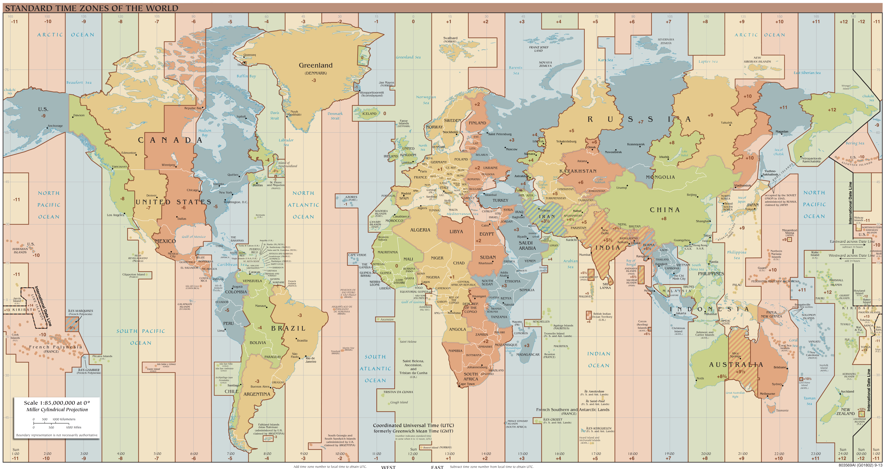

Who Has The Time?
A Study of Personal Communication Across Time Zones
 Go to portfolio.
Go to portfolio.

Qualitative Methods for Formative Research.
As part of CSC2514, Human-Computer Interaction, I performed a formative study investigated the needs of ICT users who had recently moved to a new time zone. We distributed an online questionnaire, the results of which were used to develop a semi-structured interview.
We found that users employed a range of different technologies and behavioural strategies to cope with the challenges imposed by a cross-time-zone move.
The final technical report from the project is available here.
This work was completed with two other graduate students, John Kanji and Harris Chan.